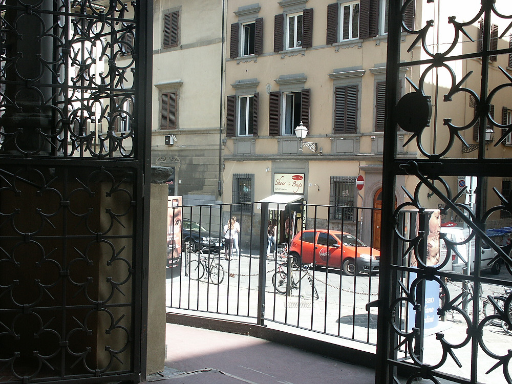

Johnnie and Oberta Baker's Photo Album Previous Gallery Next
|

A bad start to our vacation. In the rush to head to the airport, we hit one of our cats as we came out of the garage (see last picture in this album). As a result, we didn't split our credit cards and Johnnie didn't bury his. Ten minutes in the international section of the airport and Johnnie had his wallet picked! Although we had come into Barcelona a day early in order to sightsee, we spent 1.5 days notifying credit cards and filling out a police report! Kudos to American Express which was the only company where husband and wife share an account, but the card numbers are different so when one is stolen, the other is still active. With MasterCard and Visa, one card stolen means you lose everything. Talk about panic- but passport was safe. |